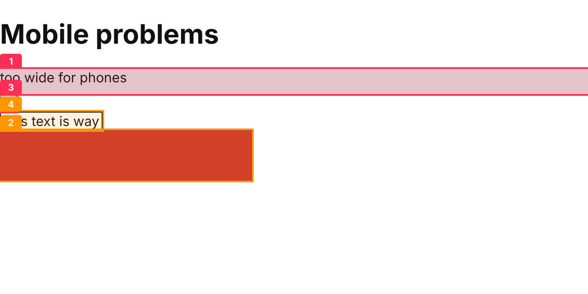
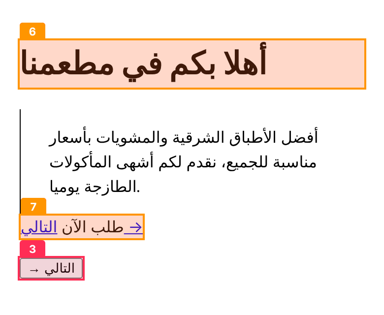
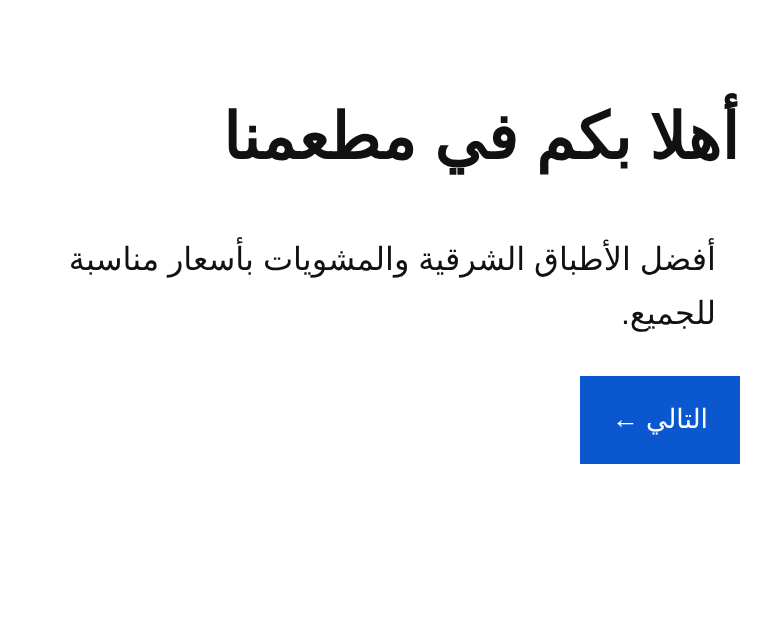

AI coding tools build web pages blind. Sightline opens the page in a real browser, spots what's broken, and tells the AI exactly how to fix it.
Four steps, about ten seconds.
Loads your page in a real Chrome at phone and desktop sizes.
Measures contrast, image shapes, button sizes, labels, overflow and more.
Draws numbered boxes on screenshots so the problem is visible.
Gives a score and a fix list. The AI edits the code and checks again.
A phone page with four planted problems. Sightline marks each one.

Objective defects, not taste.
| Layout | Sideways scrolling, cut-off text, stretched or over-cropped images |
|---|---|
| Touch | Buttons and links too small to tap on a phone |
| Accessibility | Low contrast, missing image descriptions, unlabeled fields and buttons, heading order, page language |
| Type | Text too small, too many fonts |
Most tools ignore RTL. Sightline catches the mistakes that make Arabic sites look wrong.


In Claude Code, add it once and it runs after every UI change:
Using another tool? Copy SKILL.md into its rules file. Free and open source (MIT).